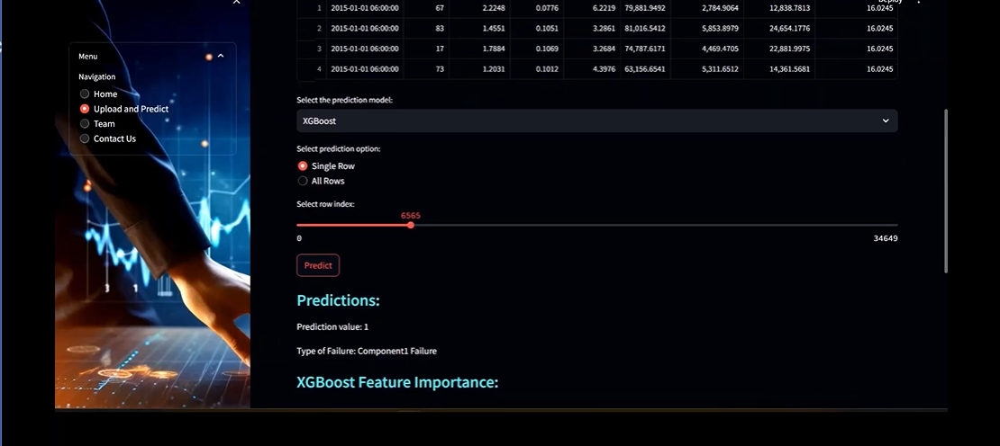

This project was a collaborative effort, developed during my internship with a talented team of data scientists and engineers. Together, we built a predictive maintenance tool that forecasts machine failures using historical data, enabling real-time monitoring and decision-making.
Features
- Real-time data analysis
- User-friendly dashboard
- Customizable alerts
Demo Screenshot
Dashboard Screenshots
Dashboard 1: High-Level Snapshot

This dashboard provides a high-level snapshot of machine health and risk alerts. It displays the outcomes of the predictions, highlighting key features affecting machine failure and the prediction results.
Dashboard 2: Historical Data Analysis

This dashboard offers an overview of the analysis derived from historical data, showcasing trends and insights that inform maintenance strategies and operational decisions.
Approach
4.1 Data Collection and Preprocessing
At the core of this solution lies comprehensive data preprocessing. We utilized synthetic data generated to mimic real-world scenarios, encompassing sensor readings, maintenance logs, operational parameters, and historical failure records. This synthetic dataset enables us to simulate diverse equipment states, failure modes, and operational conditions, facilitating rigorous testing and evaluation of our predictive maintenance models.
4.2 Feature Engineering
Feature engineering plays a crucial role in extracting meaningful insights from raw data. Leveraging domain knowledge and advanced analytical techniques, we identified and extracted relevant features that capture the underlying dynamics of equipment health. In addition to sensor readings, temporal patterns, and contextual information, we explored novel feature engineering approaches to uncover latent patterns and correlations within the data. By incorporating a diverse set of features, we aimed to enhance the predictive power and generalization ability of our models.
4.3 Model Selection and Optimization
Our model selection process involves a rigorous evaluation of various machine learning algorithms, including Random Forest, Gradient Boosting, and Support Vector Machines. Through extensive experimentation and validation, we identify the most suitable models that strike a balance between predictive accuracy and interpretability. Hyperparameter optimization techniques are employed to fine-tune model performance and ensure robustness across different datasets and operational conditions. Moreover, we prioritize models that exhibit explainable behavior and transparent decision-making processes, facilitating user understanding and acceptance.
4.4 Integration of Explainable AI (XAI) Techniques
To address the "black box" nature of predictive models, we integrated Explainable AI (XAI) techniques into our framework. By quantifying feature contributions to predictions and providing interpretable explanations for model outputs, XAI techniques enhance the transparency and trustworthiness of our predictive maintenance system. SHAP (SHapley Additive exPlanations) and LIME (Local Interpretable Model-agnostic Explanations) are among the XAI methods employed to elucidate the underlying factors driving our model predictions. Additionally, feature importance plots are generated to visually depict the relative significance of different features, empowering stakeholders to make informed decisions based on actionable insights.
Technologies Used
This project was built using:
- Python
- Streamlit for the web framework
- Machine Learning algorithms for predictions
- JavaScript for interactivity
My Contributions
Throughout this project, I contributed to several key areas:
- Data processing and cleaning
- Feature engineering to optimize model performance
- Building and fine-tuning machine learning models
- Independently building the dashboards for real-time monitoring and data insights
- Deploying the application for use in live environments